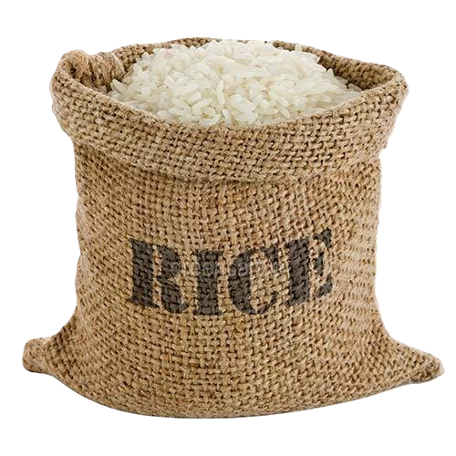

¡Welcome to THE RICE GRAIN PROJECT!
TOTAL RICE GRAINS COUNT


Total rice packets count
1.The Essence of the Project
A single grain of rice doesn’t feed anyone, but thousands together can fill a plate. This project turns every follower into a grain of rice—when we reach 1,000 grains (followers), we’ll donate a bag of rice to food banks. Your individual action may seem small, but it’s essential. Without each grain, this project wouldn’t exist. We created this initiative to show how solidarity is built through small, seemingly insignificant actions that—when combined—create real, meaningful impact.
How 1 Grain Becomes Real Food
You Follow
1 grain added to the counter
Community
Every 1,000 grains = 1 rice bag donated
Purchase
Rice bought transparently
Delivery
To local food banks
Impact
Families fed thanks to you
2.What drive us
This project exists to prove two powerful truths: First, that collective action transforms the world - your single click joins thousands to create real change. Second, that helping is shockingly simple - if people won’t even follow an account to fight hunger, what will they do? We’re testing social responsibility through the easiest possible act: one follow = one grain toward feeding families.
3. How to contribute
Collaborating is as simple as following our account - a gesture that costs you nothing but makes all the difference. With just one click, you've activated your grain of rice. Now imagine the ripple effect when thousands join in: real rice packages delivered to families in need. This isn't charity; it's community-powered change. Will you let this opportunity pass you by, when all it takes is a simple click to participate? Your grain is ready to join the movement.
4.Collaborations
Absolutely thrilled to hear your questions, ideas or suggestions for improvement! Let's make this project even better together. Drop us a message on WhatsApp or email, and we'll reply as quickly as possible. Thanks so much!